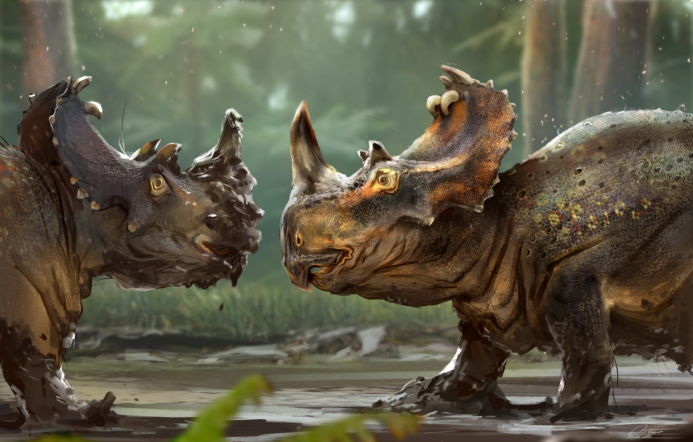

Стиракозавр - рослинноїдний динозавр ів родини цератопсидів. Жив у кінці крейдового періоду.
Від інших родичів, наприклад, трицератопсоа (Triceratops) і Хазмозавра (Chasmosaurus), стиракозавра відрізняє форма кісткового коміра і розташування рогів. У задній частині коміра у нього було до шести довгих, спрямованих назад шипів. Шипи меншого розміру розташовувались по краю коміра. Крім того, у стиракозавра був один великий ріг на носі, але над бровами роги були відсутні.
Кістковий комір, мабуть, давав деякий захист вразливій шиї тварини, куди зазвичай буває спрямована атака хижака. Але у стиракозавра комір був досить крихким і при нападі міг ламатися. Швидше за все, комір і шипи грали роль пізнавальних знаків для привертання уваги самок, а може бути, і для захисту території. Не виключена можливість того, що комір стиракозавра був яскраво пофарбований. Деякі вчені навіть вважають, що стираккозавр при бажанні міг змінювати колір коміра, як хамелеон змінює колір шкіри.
Його потужне захисне озброєння було життєвою необхідністю: за стадами великих травоїдних завжди слідували грізні хижаки, що збирають з них «данину». Ймовірно, при нападі на стадо дорослі стиракозаври утворювали коло, виставивши назовні шипасті рогаті голови. Через такий заслін важко було прорватися навіть тиранозавру, і хижаки воліли атакувати відсталих і ослаблих особин.
